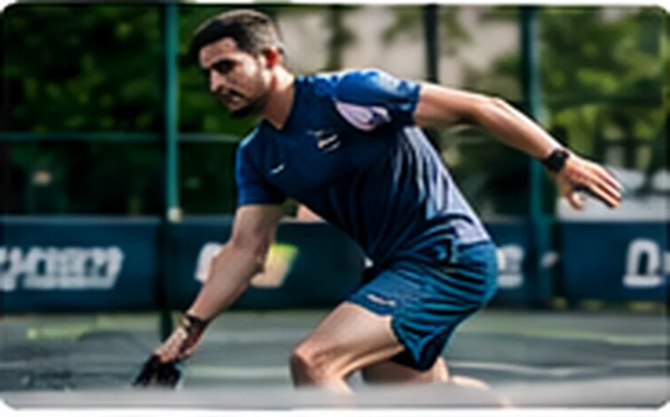

Pickleball
PickleballLuật pickleball cơ bản: cách tính điểm và khu vực bếp
Hiểu luật giao bóng, hai lần nảy và vùng không volley giúp người mới tự tin vào sân.
Từ luật chơi đến phối hợp trên sân: kiến thức dễ áp dụng cho người mới và người chơi phong trào. Các bài viết được sắp xếp để bạn bắt đầu từ nền tảng, tiếp tục với bài thực hành và lựa chọn phù hợp với nhu cầu.
PickleballHiểu luật giao bóng, hai lần nảy và vùng không volley giúp người mới tự tin vào sân.

PickleballMục tiêu đầu tiên của cú giao là hợp lệ, sâu vừa đủ và có thể lặp lại nhiều lần.
 Pickleball
PickleballĐánh đôi hiệu quả đến từ cùng dịch chuyển và phân chia trách nhiệm rõ ràng.